Arrow User Guide
Arrow (formerly LoOper) is a desktop-native automation platform for recording, building, and running reliable workflows that can see the screen, reason with local AI, and act through mouse/keyboard control.
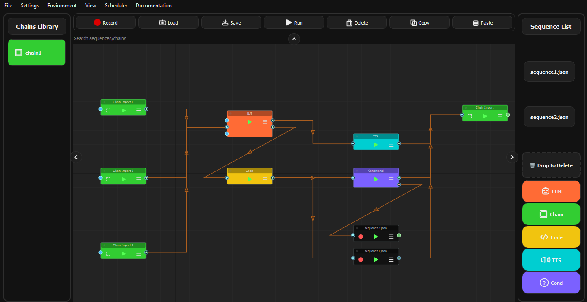
When you launch Arrow, you will see the main window with:
- Central Canvas: The node graph editor where you build automation workflows
- Top Menu Bar: File operations, settings, and tools
- Right Toolbar: Node palette with available node types
- Node Graph: Visual representation of your automation workflow
Project Structure
Arrow organizes your work into:
| Folder | Purpose |
|---|---|
sequences/ |
Stored recorded sequences (JSON + screenshots) |
chains/ |
Chain workflow files that combine sequences and nodes |
Recording Sequences
Recording is the process of capturing your mouse clicks, keyboard input, and scrolling into a reusable sequence file.
How to Record
- Click Record in the toolbar or use the menu option
- Perform your desired actions on screen:
- Clicks (left, right, middle)
- Keyboard typing
- Scrolling
- Drag operations
- Press ESC or click Stop to end recording
- Your sequence is saved automatically to the
sequences/folder
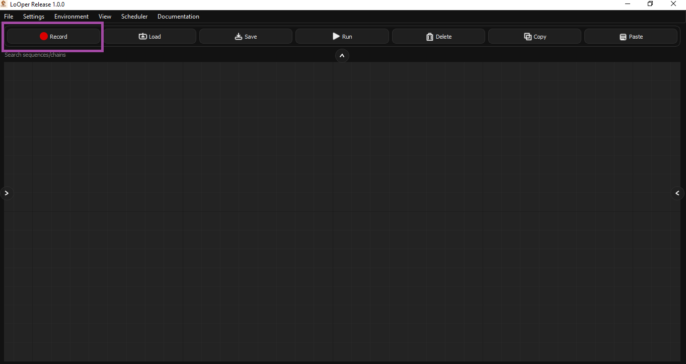
Recording Settings
| Setting | Description |
|---|---|
| Sequence Name | Name for the recorded sequence file |
| Screenshots Directory | Where click screenshots are stored |
| App Context | Automatically captures which application was active |
What Gets Recorded
| Action Type | Description |
|---|---|
click |
Mouse clicks with coordinates and screenshots |
type_string |
Typed text (batched for efficiency) |
keystroke |
Special keys (Enter, Tab, etc.) |
clipboard |
Copy, Paste, Cut, Select All, Undo, Redo |
scroll |
Scroll bursts (multiple scrolls grouped into one action) |
drag_drop |
Mouse drag operations |
move_to |
Mouse movement (when holding Right-Ctrl) |
absolute_click |
Mouse left click at specific coordinates (when holding Right-Shift) |
Smart Recording Features
- Scroll Burst Grouping: Multiple rapid scroll events are grouped into a single scroll action
- Text Buffering: Typed characters are batched into a single
type_stringaction - Modifier Shortcuts: Common shortcuts like Ctrl+C/V/X/A are recognized and recorded as clipboard operations
- App Context: Records which application window was active for each action
- Native Screenshot Capture: Arrow captures screenshots automatically around click coordinates for visual matching during playback
Screenshot Capture
During recording, Arrow automatically captures small screenshots (70x70 pixels by default) around each click location. These screenshots are stored in sequences/screenshots/ and are used during playback for template matching to find the correct UI element.
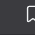
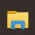
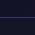
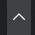
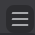
Playback and Execution
All nodes in Arrow (not just sequences) are executed through the Workflow Interpreter, which handles:
- Sequential execution of nodes in dependency order
- Conditional branching based on true/false outputs
- Error handling and retries
- Variable passing between nodes
How Playback Works
- Start: The workflow interpreter loads the chain file
- Node Execution: Each node is executed in order based on connections
- Branching: Conditional nodes route execution to different branches
- Completion: Chain finishes or ESC cancels execution
Visual Matching
Arrow uses template matching to find UI elements reliably:
| Method | Description |
|---|---|
| Template Match | Finds the screenshot image on screen |
| Multi-Scale | Handles size variations of UI elements |
| Region Search | Limits search to a specific screen area |
| OCR Trigger | Waits for text to appear using optical character recognition |
Stopping Execution
Press ESC at any time to cancel execution safely.
Schedules
Schedules allow you to automatically run your automation chains at specific times.
Schedule Types
| Type | Description |
|---|---|
| Once | Run a single time at a specified date/time |
| Daily | Run every day at a specified time |
| Weekly | Run on specific days of the week |
| Interval | Run every N minutes/hours |
Creating a Schedule
- Open Scheduler Manager from the menu
- Click Add Schedule
- Configure:
- Name: Descriptive name for the schedule
- Type: Once, Daily, Weekly, or Interval
- When: The time/date specification
- Chain: Select which chain to run
- Enable/disable the schedule using the toggle
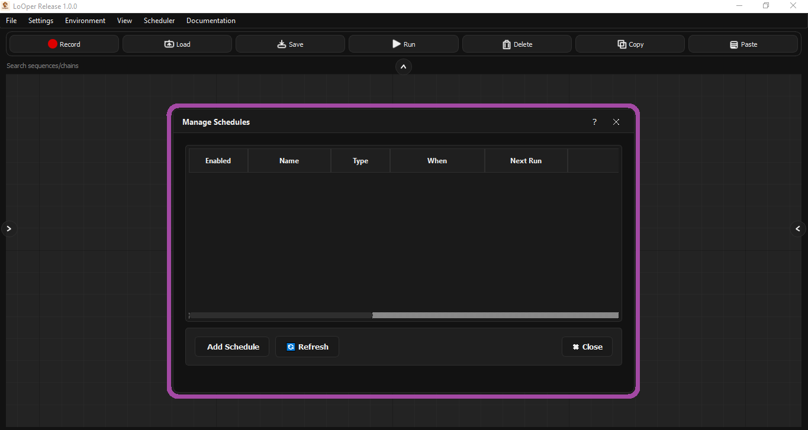
Schedule Management
| Feature | Description |
|---|---|
| Enable/Disable | Toggle schedules on/off without deleting |
| Run Now | Manually trigger a schedule immediately |
| Edit | Modify schedule parameters |
| Delete | Remove a schedule permanently |
Persistence
Schedules are saved to schedules.json and persist across application restarts. The scheduler runs as a background service that checks every 10 seconds for due schedules.
Node Types
Nodes are the building blocks of automation workflows. Each node type performs a specific function.
Node Colors Quick Reference
| Node Type | Color |
|---|---|
| Sequence Node | Dark Grey (#121212) |
| Conditional Node | Purple (#7B61FF) |
| LLM Node | Orange (#FF6B35) |
| TTS Node | Cyan (#00CED1) |
| Chain Import Node | Green (#32CD32) |
| Form Filler Node | Plum (#DDA0DD) |
| Code Node | Yellow (#F1C40F) |
Sequence Node
Purpose: Executes a recorded sequence file.
| Property | Description |
|---|---|
sequence_file |
Path to the sequence JSON file |
loop_count |
Number of times to repeat the sequence |
extra_delay |
Additional delay between iterations (seconds) |
use_app_opened |
Whether to focus the recorded app before playing |
Color: Dark Grey
Ports: 1 input, 1 output (multi-output capable)
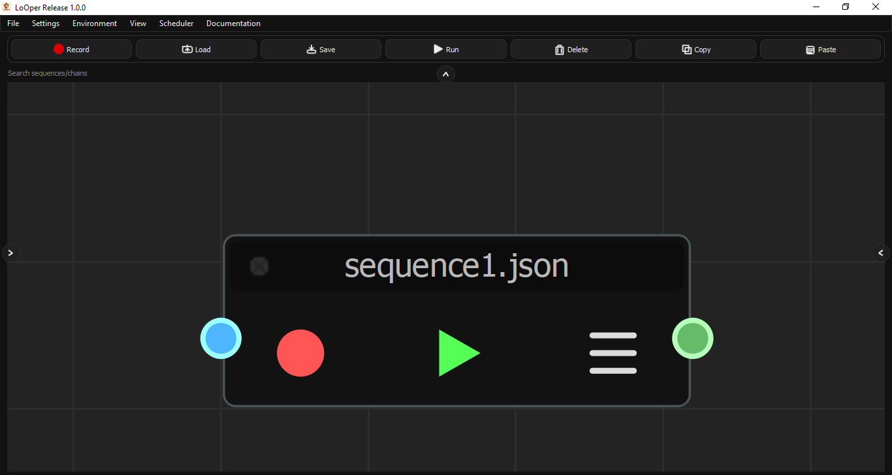
Conditional Node
Purpose: Waits for conditions or creates branching logic based on screen state or code evaluation.
Condition Types
| Condition Type | Description |
|---|---|
| Code Condition | Execute Python code that returns True/False |
| Presence Trigger | Wait until an image appears on screen (True output), or continue immediately if not found (False output) |
| OCR Trigger | Wait until specific text is detected |
| Layout Match | Wait for image at a specific screen region with exact position |
| Wait Time | Wait for a specified duration |
Note: Absence behavior is handled by connecting nodes to the False output of a Presence Trigger, allowing you to branch based on whether an image is found or not.
Conditional Loop Types
Arrow supports conditional loops that execute a sequence repeatedly based on conditions.
| Loop Type | Description |
|---|---|
| while_present | Loop while an image/condition is present |
| until_present | Loop until an image/condition appears |
Note: For "while absent" or "until absent" logic, stack conditionals by connecting the False output of a Presence Trigger to another conditional node.
Color: Purple (#7B61FF)
Ports: 1 input, 2 outputs (True/False for conditionals)
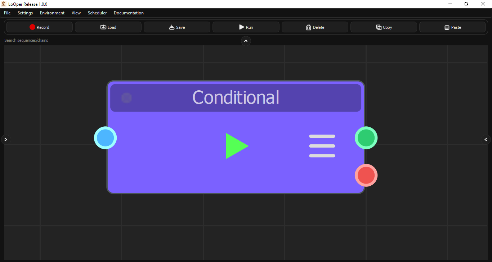
Creating Image Triggers
Arrow provides a built-in screenshot capture tool for creating image-based triggers:
- Click Capture... in the trigger dialog
- Arrow minimizes the window and freezes the screen
- Draw a rectangle around the target area
- The screenshot is automatically saved and path inserted
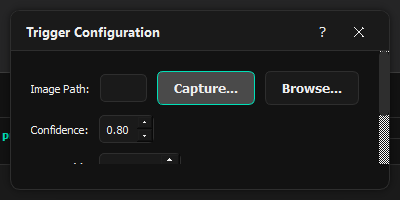
LLM Node
Purpose: Integrates local AI (Ollama) for data ingestion, manipulation, dynamic text generation, and analysis.
Input Sources
| Source | Description |
|---|---|
| None | Direct prompt (no input processing) |
| OCR | Extract text from screen using optical character recognition |
| Previous Node | Use output from the previous node in the chain |
| Clipboard | Use current clipboard content |
Model Configuration
| Property | Description |
|---|---|
model |
Ollama model to use (e.g., llama3.2:latest) |
temperature |
Response randomness (0.0-2.0) |
max_tokens |
Maximum response length |
api_url |
Ollama API endpoint (defaults to localhost:11434) |
Quick Templates
LLM nodes include templates for common tasks:
| Template | Description |
|---|---|
| Information Extraction | OCR + LLM for data extraction |
| Form Filling | Vision + LLM for form completion |
| Data Processing Chain | Transform and process data |
| Text Analysis | Analyze and categorize text |
| Content Summarization | Summarize content |
| Tool Selection | LLM-powered decision making |
| Python Code Generation | Generate Python code |
Color: Orange (#FF6B35)
Ports: 1 input, 1 output
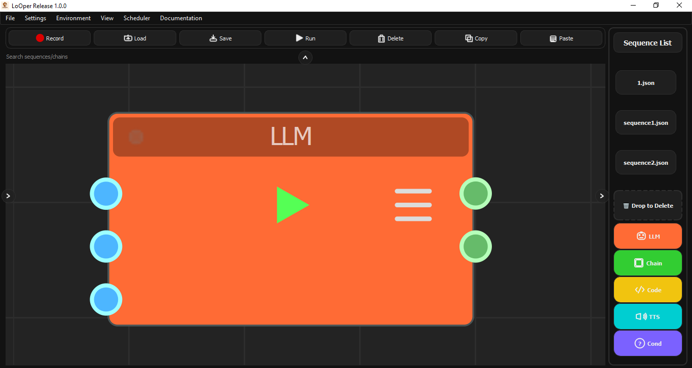
TTS Node
Purpose: Speaks text aloud using text-to-speech.
| Property | Description |
|---|---|
text |
Text to speak |
language |
Language code (en, es, fr, de, etc.) |
Color: Cyan (#00CED1)
Ports: 1 input, 1 output
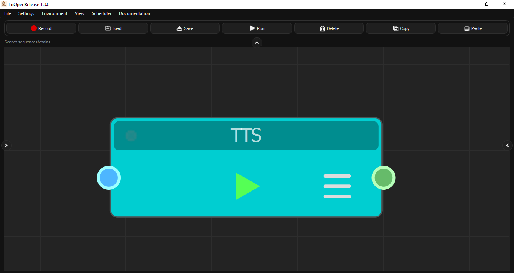
Chain Import Node
Purpose: Embeds another chain as a subgraph, enabling workflow composition and reuse.
| Property | Description |
|---|---|
chain_file |
Path to the chain JSON to import |
import_mode |
full, sequences_only, or nodes_only |
prefix |
Prefix for imported node names |
loop_count |
Times to execute the imported chain |
extra_delay |
Delay between loop iterations |
Color: Green (#32CD32)
Ports: 1 input, 1 output
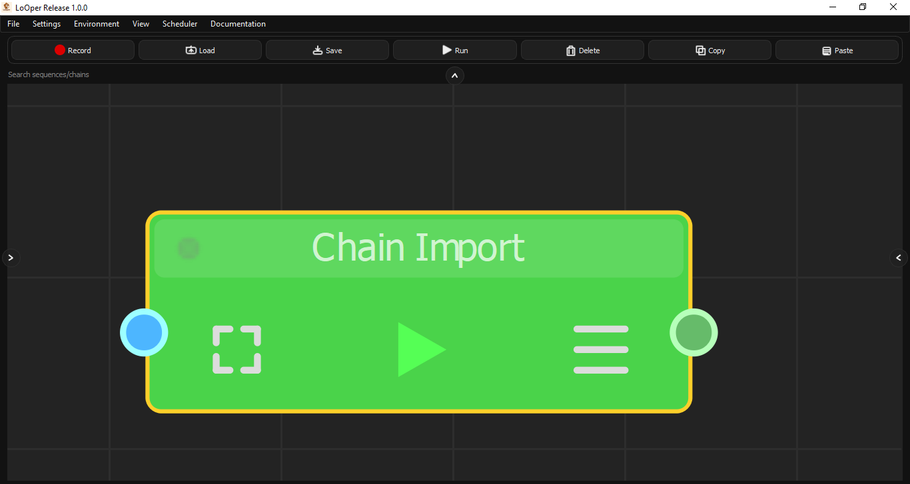
Code Node
Purpose: Executes custom Python code during workflow execution.
| Property | Description |
|---|---|
code |
Python code to execute |
source_type |
"inline" or "file" |
file_path |
Path to Python file (if file source) |
timeout |
Maximum execution time (seconds) |
output_variable |
Variable name for result |
Available Variables:
input_data- Data from previous nodeargs- Additional argumentsresult- Assign your output to this variable
Color: Yellow (#F1C40F)
Ports: 1 input, 1 output
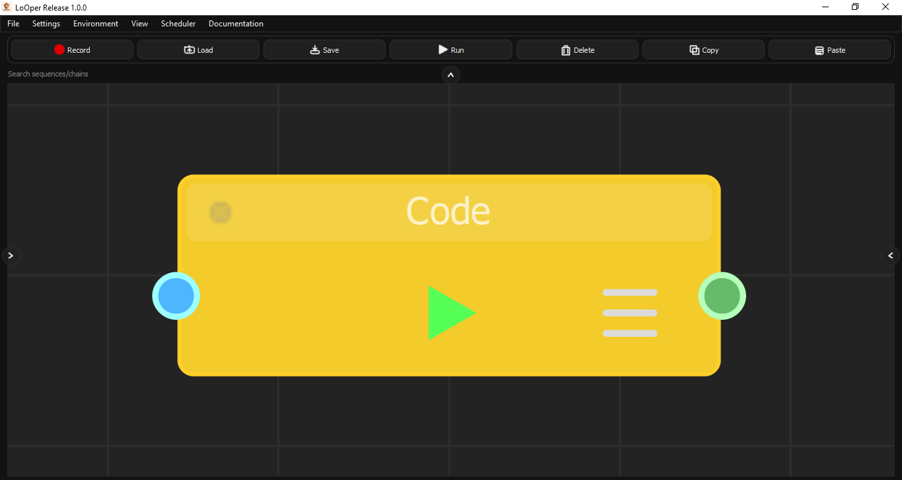
Recording Special Actions
Modifier Key Combinations
| Action | Recording Method | Result |
|---|---|---|
| Ctrl+Click | Hold Ctrl + Left Click | Recorded as ctrl_click type |
| Shift+Click | Hold Shift + Left Click | Recorded as shift_click type |
| Absolute Click | Hold Right-Shift + Left Click | Recorded as absolute_click (ignores offsets) |
Clipboard Operations
| Shortcut | Recorded As |
|---|---|
| Ctrl+C (Copy) | clipboard with operation "c" |
| Ctrl+V (Paste) | clipboard with operation "v" |
| Ctrl+X (Cut) | clipboard with operation "x" |
| Ctrl+A (Select All) | clipboard with operation "a" |
| Ctrl+Z (Undo) | clipboard with operation "z" |
| Ctrl+Y (Redo) | clipboard with operation "y" |
Mouse Drag Recording
- Press and hold left mouse button at start position
- Drag to end position
- Release
Result: Recorded as drag_drop action with from and to coordinates.
Right-Ctrl Mouse Movement
Holding Right-Ctrl while moving the mouse records a move_to action. This is useful for positioning the cursor without performing a click.
Node Dialogs Reference
Each node type has a configuration dialog accessible via double-click or context menu.
Sequence Node Dialog
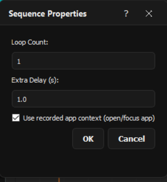
| Field | Effect on Behavior |
|---|---|
| Loop Count | Number of times the sequence repeats. Higher values = more repetitions. |
| Extra Delay | Wait time (seconds) added between each loop iteration. Use for rate limiting or waiting for UI updates. |
| Use App Opened | When enabled, the player will attempt to focus and activate the application that was active when the sequence was recorded before playback begins. |
Conditional Node Dialog
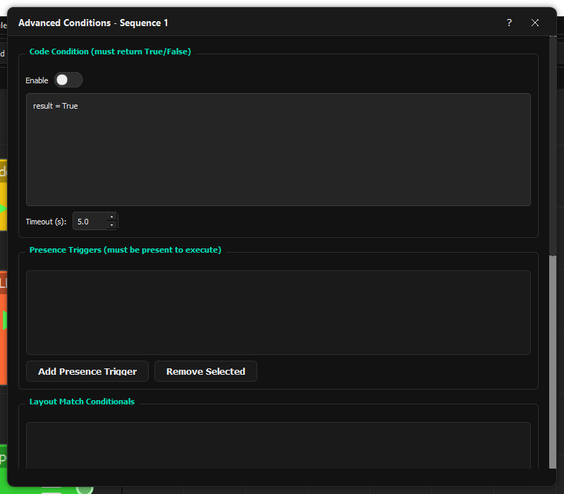
Code Condition Section
| Field | Effect on Behavior |
|---|---|
| Enable | Toggle code condition evaluation |
| Code | Python code that must return True/False. Access input via input_data variable. |
| Timeout (s) | Maximum time allowed for code execution |
Presence Triggers Section
| Field | Effect on Behavior |
|---|---|
| Add Presence Trigger | Add an image that must be visible for the condition to pass |
| Confidence | Match threshold (0.1-1.0, higher = stricter) |
| Timeout | Maximum wait time; if 0, waits indefinitely |
LLM Node Dialog
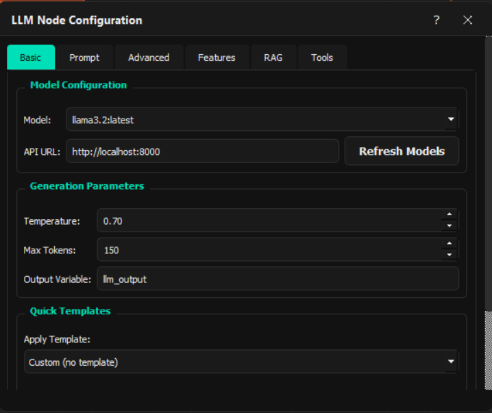
Basic Tab
| Field | Effect on Behavior |
|---|---|
| Model | Ollama model for inference |
| Temperature | Response randomness (0=deterministic, 2=random) |
| Max Tokens | Maximum response length |
| Output Variable | Variable name to store response |
Chain Import Dialog
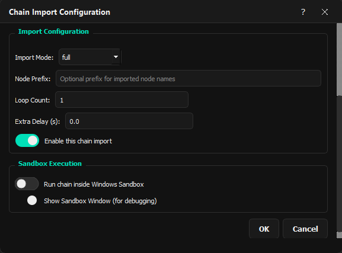
| Field | Effect on Behavior |
|---|---|
| Chain File | Path to the chain JSON to embed |
| Import Mode | full = all nodes, sequences_only = only sequence nodes, nodes_only = only logic nodes |
| Node Prefix | Added to all imported node names to prevent conflicts |
| Run in Sandbox | Execute inside a private RDP session |
Code Node Dialog
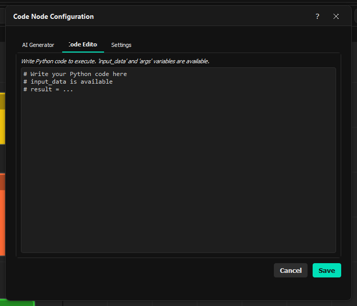
| Tab | Field | Effect on Behavior |
|---|---|---|
| AI Generator | Model | Ollama model for code generation |
| Prompt | Description of desired code functionality | |
| Editor | Code | Python source code to execute |
| Settings | Source Type | "inline" for typed code, "file" for external .py file |
| Timeout | Maximum execution time in seconds |
Sandboxing
Sandboxing in Arrow uses RDPWrap to give the automation agent its own private Windows session, allowing background task execution without interfering with the user's active desktop.
How RDP Sandbox Works
- RDPWrap Installation: Enables multiple concurrent RDP sessions on Windows
- Agent User: Creates a dedicated user account (
LooperAgent) for the agent - Private Session: The agent runs in a separate RDP session that doesn't affect the user's active desktop
- Communication: Arrow communicates with the agent via HTTP API
Architecture
graph LR
subgraph UserDesktop["User's Desktop"]
ArrowGUI["Arrow GUI"]
AgentBridge["Agent Bridge"]
HTTPAPI["HTTP API localhost"]
end
subgraph PrivateSession["LooperAgent Private RDP Session"]
AgentHandler["Agent Handler"]
ScreenCapture["Screen Capture"]
AppUnderTest["Application Under Test"]
end
ArrowGUI --> AgentBridge
AgentBridge --> HTTPAPI
HTTPAPI --> AgentBridge
AgentBridge --> ArrowGUI
HTTPAPI -. RDP Session Communication .-> AgentHandler
AgentHandler --> ScreenCapture
ScreenCapture --> AgentHandler
ScreenCapture --> AppUnderTest
AppUnderTest --> ScreenCapture
Agent Actions
The sandbox agent supports these actions via HTTP POST:
| Action | Parameters | Description |
|---|---|---|
click |
x, y, button | Move to (x,y) and click |
type |
text | Type text string |
hotkey |
keys[] | Press key combination |
screenshot |
(none) | Capture and return screen as base64 PNG |
scroll |
amount | Scroll by amount (negative = down) |
Sandbox vs Direct Execution
| Aspect | Direct Execution | RDP Sandbox |
|---|---|---|
| Isolation | None - runs on host | Full isolation in separate RDP session |
| User Interference | Can interrupt user's work | Agent works independently |
| Speed | Faster | Slower (session overhead) |
| Use Case | Trusted, quick tasks | Background agents, long-running tasks |
Debugging Sandbox Issues
If sandbox fails to start:
- Ensure RDPWrap is installed: Check
C:\Users\%USERNAME%\AppData\Local\LoOper\RDPWrapor reinstall Arrow - Check that
LooperAgentuser exists - Verify the user is in Remote Desktop Users and Administrators groups
- Check
agent_info.jsonfor connection details
Troubleshooting
| Issue | Solution |
|---|---|
| Sequence plays wrong app | Enable "Use App Opened" or manually focus target app |
| Click misses target | Adjust confidence threshold lower (0.7-0.8) |
| OCR not finding text | Increase confidence threshold, check language setting |
| Scheduler not running | Check if Arrow is running, verify schedules.json exists |
| Sandbox fails | Ensure RDPWrap is installed or reinstall Arrow |
| Conditional loop not ending | Check max_iterations limit and loop condition |
Keyboard Shortcuts
| Shortcut | Action |
|---|---|
| Ctrl+C | Copy selected nodes |
| Ctrl+V | Paste copied nodes |
| ESC | Stop recording / Cancel execution |